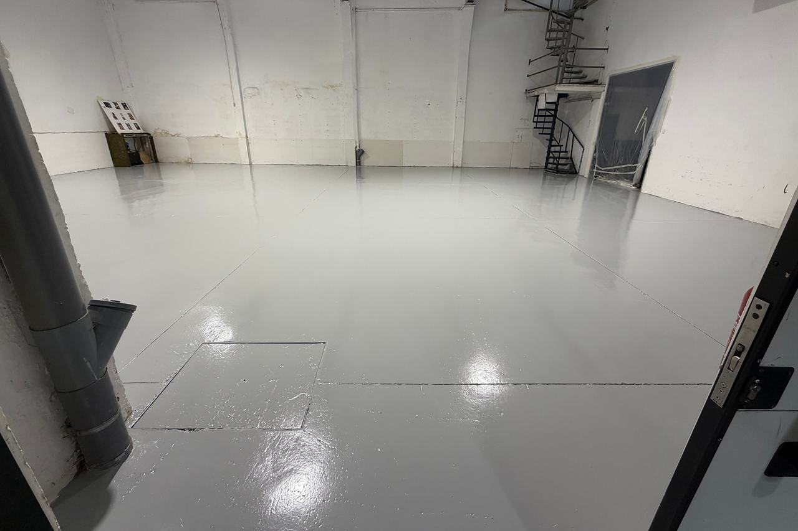

Manteniment de pintura sense aturar la fàbrica
Una fàbrica es pinta per parts i al llarg de l’any: el terra d’una zona de pas, la senyalització que s’ha esborrat, les parets d’un magatzem, una estructura que comença a rovellar-se. Ho organitzem amb qui porta el manteniment, per zones o aprofitant les aturades.

El que es gasta en una nau
- Terres
- Reparació de zones gastades o aixecades i repintat amb epoxi o poliuretà segons l’ús: trànsit, carretons, productes químics i neteja.
- Senyalització
- Passadissos per a vianants, zones de càrrega, passos i àrees de seguretat, repintats quan s’esborren.
- Parets i sostres
- Magatzems, vestidors, oficines i zones de producció, amb pintures adequades a la neteja que necessiten.
- Estructures i serralleria
- Pilars, encavallades, baranes, portalades i escales: eliminar el rovell i protegir amb un sistema per capes.
- Cobertes
- Goteres en xapa, fibrociment o llosa, amb membrana de poliuretà líquid.
- Dipòsits i peces
- Reparacions amb fibra de vidre, com un dipòsit de fibra enterrat de 15 m³ que s’havia esquerdat.


Una nau, del formigó al terra blanc
El terra de formigó preparat i, al costat, l’acabat blanc acabat.
Manteniment planificat
Recorregut
Visitem la planta amb qui porta el manteniment i anotem, zona per zona, què està gastat i què és urgent.
Prioritats
Ordenem els treballs per seguretat, per ús i per pressupost, per repartir-los durant l’any si cal.
Execució per zones
Per sectors, en caps de setmana o en aturades, amb la zona senyalitzada i separada de la producció.
Entrega
Revisió amb el responsable i temps d’ús: quan es pot tornar a trepitjar o a circular.
Sobre manteniment industrial
Podeu treballar fora de l’horari de producció?
Sí. Es planifica per zones, en caps de setmana o en aturades, segons el que permeti la planta.
Amb quins materials treballeu?
Pintura epoxi Isaval en terres, sistemes per capes en estructures metàl·liques, poliuretà líquid Mamper en cobertes i pintures plàstiques Jotun en parets.
Heu treballat en naus?
Sí. El nostre equip va participar en els acabats de tot l’interior de les naus i oficines de Hune.
Què cal posar al dia?
Explica’ns quines zones, els metres aproximats i quan s’hi pot treballar. Et proposem una visita.